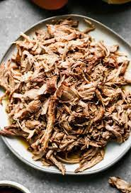

About Me
How to
SMOKE
pulled pork

Wash meat and apply rub vigorously
Preheat smoker to 225° degrees
Toss the meat on the smoker and crack a cold one
Wait for the stall and wrap with aluminum foil
alternatively you can push through the stall and moisten with apple juice every 30mins
Click me for a better guide